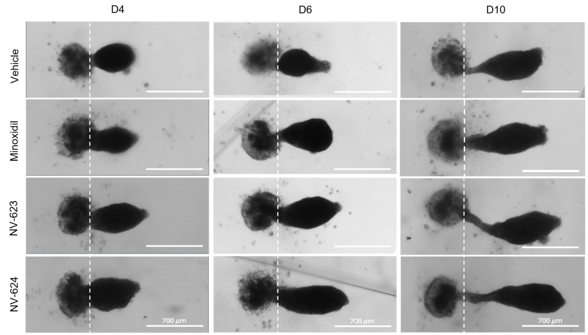

We already covered the minoxidil fine print in Minoxidil 101: Read Before You Commit to the Scalp Situationship. This is the next question: If the hair-growth industry finally wants to move past "old active, new bottle," what does better science actually look like?
The bar we are always holding is: show the mechanism, show the model, show the data, and tell us what still needs to be proven.
NOVOGRO™ is a proprietary class of molecules designed around follicle biology. It first landed on our radar through professional chatter: dermatologists and beauty editors we trust have been talking about this new preprint tied to RE:YOU, an emerging brand building its serum around the technology. That caught our attention because the hair-growth category has spent decades dressing up old answers in new packaging. NOVOGRO™ is making a bigger claim: that the next generation of hair serums should start with how the follicle actually works.
Fine. Let's look under the hood.
"I wanted to talk with [the research team] more about what you’ve seen so far, whether you have test studies, and how long it typically takes to see growth, and that type of evidence. As an editor and consumer, that’s definitely something I’d want to see first." — Anneliese Henderson, Senior Editor, Branded Content at Who What Wear and Marie Claire
The Follicle Is Not One Button
First, the follicle itself.
Hair growth is not just "stimulating the scalp and hoping for the best." The follicle behaves more like a tiny biological factory. It needs active growth-control cells, a supportive environment, and clear signaling between different cell types.
| Part of Hair Biology | What It Does | Truth Behind Beauty Translation |
|---|---|---|
| Dermal papilla cells | Help regulate follicle size, growth cycling, and regenerative behavior. | The follicle's control center. If these cells get tired, your hair starts acting tired. |
| Scalp microenvironment | Includes oxygen response, metabolic signaling, vascular support, and local stress cues. | Hair does not grow in a vacuum. The "soil" matters. |
| Cell-to-cell signaling | Follicle cells constantly communicate to coordinate growth. | If the group chat breaks, the follicle gets messy. |
The Claim: NOVOGRO™ Is Built Around the Follicle, Not the Shelf
The research paper defines NOVOGRO™ as a system designed around the fact that hair thinning is a biological, multi-pathway problem. That claim is intriguing enough to deserve a closer look.
NOVOGRO™ is positioned as a proprietary class of precision molecules designed to support hair growth through multiple pathways: NV-623 + NV-624 for dermal papilla cell support, and NV-273 for scalp-environment support.
Good claim. Now it needs receipts.
First, we looked at how these molecules were found. The team screened large chemical libraries, narrowed down candidates, tested them in hair-relevant systems, and then optimized the molecules for efficacy, specificity, safety, solubility, and formulation feasibility. That is closer to "designed for hair biology" than the usual beauty-serum move of picking a trendy extract and praying the label sounds expensive.
Let's take a closer look at the two pathways.
Pathway 1: Cellular Renewal — NV-623 + NV-624
As we mentioned earlier, dermal papilla cells help regulate the follicle's growth behavior. When these cells lose activity, the follicle can start producing thinner, shorter, weaker-looking hair.
The early NOVOGRO™ data is consistent with that claim. A quick translation before the data:
| What the Data Looks At | Why It Matters |
|---|---|
| DPC viability | Checks whether the follicle's control-center cells look more active or better supported. |
| Organoid sprouting length | Measures whether follicle-like structures grow more visibly in a controlled 3D model. |
NV-623 and NV-624 consistently enhanced dermal papilla cell viability across three independent donors, increasing viability by an average of 14.1% and 10.6%, respectively, whereas minoxidil didn't help at all.
Measures the health and activity of dermal papilla cells, which help regulate follicle growth, cycling, and regenerative activity.
The data represent averages across independent donors, which helps reduce the "one lucky cell batch" problem.
In the 3D hair follicle organoid model, NV-623 and NV-624 produced 31.4% greater follicle-like sprouting than minoxidil by day 10.

Scalp Environment: NV-273
NV-273 targets the HIF-1α pathway, which is tied to oxygen-response biology and downstream signals involved in vascular and metabolic support. This partly overlaps with the way minoxidil is commonly explained: Minoxidil mostly gets talked about as a blood-flow story. NV-273 plays in that neighborhood, but it goes broader: oxygen response, metabolic signaling, VEGF-related support, and the local follicle environment.
| Term | What It Means | TBB Translation |
|---|---|---|
| HIF-1α | A transcription factor activated when cells respond to low-oxygen or oxygen-stress signals. | The "adapt and support tissue" signal. |
| Lactate | A metabolic signal linked to cellular energy and tissue response. | A sign when the local environment is putting in the exercise (think lactate in muscle). |
NV-273 showed 52.0% higher HIF-1α activation than the untreated control, meaning it appeared to switch on a key oxygen-response pathway linked to regenerative and vascular-support signaling around the follicle. In the same benchmark, its HIF-1α activation was about 7.9× higher than the minoxidil-based formula.
Supports the follicle environment tied to oxygen, nutrients, and repair.
In DPC cells, NV-273 induced 3.6× more lactate production than the positive control, meaning the follicle-support environment was being biologically engaged.
A marker of metabolic activity and HIF-1α pathway engagement around the follicle.
The Stability Point
The formulation study also reported that the lead compounds retained more than 90% of their initial amount after 150 days under ambient storage, which matters because a brilliant molecule that falls apart in a bottle is just expensive lab poetry.
What the Data Does Not Prove Yet
Lab data is still lab data.The paper itself notes several limitations: organoid models do not fully represent the full human scalp environment, some gene-expression changes may not be limited to the intended pathway, and future clinical studies are needed to evaluate long-term efficacy and safety.
The right level of excitement is: interested, but still asking for human data.The next real test is clinical.
🚩 What to Watch For: Clinical Trial In Progress
A 6-month, double-blind, controlled clinical trial comparing a NOVOGRO™-powered serum against a minoxidil control is underway, enrolling 150+ women with hair thinning. The full 3-month dataset is projected for the end of June, and we'll be watching closely.
The Quiet Reality the Industry Doesn't Say Publicly
If minoxidil were introduced today, with an unclear full mechanism, results that depend on never really stopping, and side-effect warnings that go beyond a little scalp irritation, it probably would not be allowed to rule the entire category. It would be one option, useful for some people, but not the whole kingdom. The future of hair loss should not be another forty years of rubbing in the same old molecule and pretending the trade-off is the price of admission.
NOVOGRO™ does not get a crown yet, but it does get a seat at the table. And honestly, in a hair-growth category that has been recycling old answers for decades, that already makes things more interesting.
Reference: Qu Z, Li Y, Cho SE, Doğan L, Yao Q, Tang L, Zhao G, Li A, Omori S, Wong F, Zhao EM, Zhang DKY. AI-enabled discovery of small molecules targeting complementary pathways for hair follicle rejuvenation. bioRxiv preprint. 2026. doi: https://doi.org/10.64898/2026.06.09.728282.